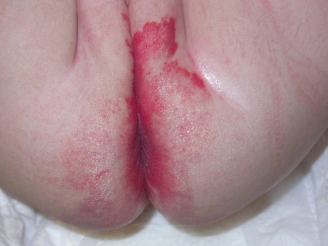
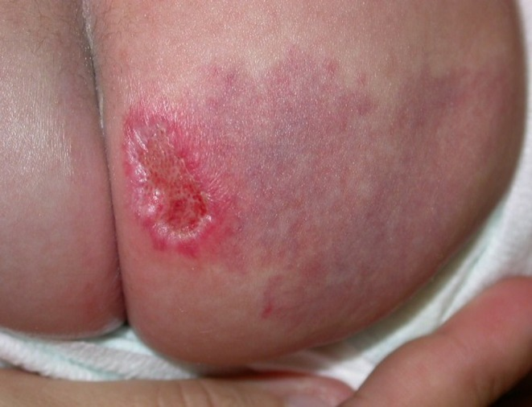
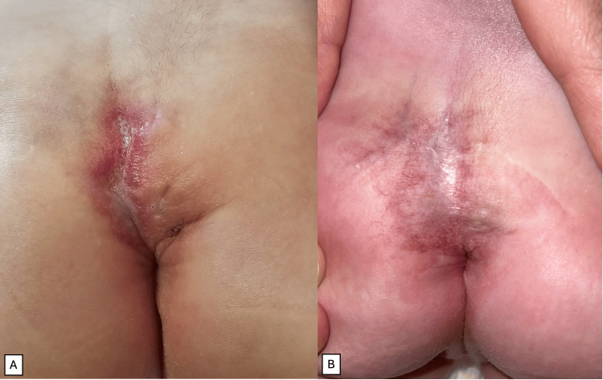
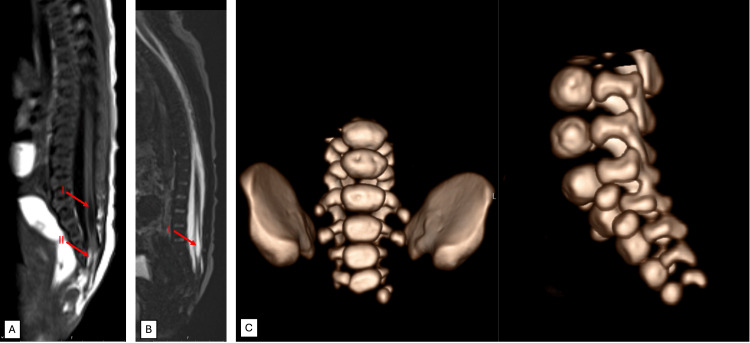

3073 — Hội chứng LUMBAR: u máu đường giữa thắt lưng–cùng cụt, khi nào siêu âm tủy và khi nào bắt buộc MRI
Tags: pattern:u-mau-duong-giua pattern:di-tat-tuy pattern:tuy-neo vung:cot-song-cung-cut vung:da-lung-mong anatomy:tuy-song protocol:MRI-cot-song protocol:US-cot-song score:LUMBAR-Delphi
Mức chắc chắn (certainty): tổng hợp y văn (literature synthesis) — ghép nghiên cứu tiến cứu 41 trẻ u máu đường giữa thắt lưng–cùng cụt được MRI (J Pediatr 2010, PMID 20828712), phân tích 148 ca LUMBAR/91 ảnh đủ tiêu chuẩn (Pediatr Dermatol 2026, PMC13423108), đồng thuận Delphi 2024 về tiêu chuẩn chẩn đoán (J Pediatr 2024, PMID 38759778), đồng thuận quốc tế 2024 về chụp hình dị tật tủy (AJNR 2024, PMID 38360788/PMC11288609), ca nguyên văn LUMBAR (Cureus 2025, PMC11970802) và loạt 141 nhũ nhi có dấu hiệu da vùng thắt lưng–cùng cụt (SAGE Open Med 2021, PMC8358506). Không có ca do nhóm tự chụp.
Câu hỏi thực hành: bé gái 7 tuần, mảng đỏ phẳng vượt qua đường giữa vùng cùng cụt–mông, từ lúc sinh, không loét; không yếu chi, đi tiêu tiểu bình thường. Bố mẹ hỏi: "Có phải u máu không? Có cần chụp gì không? Siêu âm đã đủ chưa?" Bài chốt năm quyết định: (1) u máu vùng thắt lưng–cùng cụt ĐƯỜNG GIỮA là dấu hiệu da của dị tật tủy — 51,2% trẻ có u máu đường giữa được MRI đã có bất thường trong ống sống; (2) chỉ tổn thương ĐOẠN TÍNH VƯỢT ĐƯỜNG GIỮA mới mang nguy cơ — 91/91 ca LUMBAR đều vượt/áp đường giữa, không ca nào hoàn toàn một bên; (3) tổn thương hoàn toàn một bên, không chạm đường giữa KHÔNG cần tầm soát; (4) siêu âm tủy chỉ là bước sàng lọc — trong nhóm nguy cơ cao, độ nhạy chỉ 50%, nên MRI là tiêu chuẩn; (5) khám phải trọn bộ LUMBAR: thận–niệu, hậu môn–trực tràng, cột sống–tủy, mạch chi dưới.
1. Tổng quan bệnh học – cơ chế hình ảnh: vì sao u máu da lại chỉ điểm dị tật tủy
- Định nghĩa: LUMBAR = Lower body hemangioma (u máu nửa dưới cơ thể) + các dị tật Urogenital (sinh dục–niệu), Ulceration (loét), Myelopathy (bệnh tủy/dị tật tủy), Bony deformities (dị tật xương), Anorectal malformations (dị tật hậu môn–trực tràng), Arterial anomalies (dị tật động mạch), Renal anomalies (dị tật thận). Đây là bản thể "nửa dưới" của PHACE (bài 3068/3071 đã nhắc).
- Tiêu chuẩn chẩn đoán (đồng thuận Delphi 2024, 61 chuyên gia, đồng thuận ≥ 92% mỗi phát biểu): cần u máu nhũ nhi ĐOẠN TÍNH (segmental) hoặc có hình mẫu (patterned) ở vùng thắt lưng–cùng cụt, cùng cụt hoặc vùng chậu, cộng ít nhất 1 tiêu chuẩn thuộc sinh dục–niệu, tủy sống, xương, hậu môn–trực tràng, động mạch hoặc thận (PMID 38759778).
- TẠI SAO u da và dị tật tủy đi cùng nhau (giải thích bằng phôi thai, không phải "trùng hợp"): da vùng thắt lưng–cùng cụt, tầng sinh môn và vùng chậu phát triển từ notochord, trung bì cạnh trục (paraxial mesoderm) và màng nhớt (cloacal membrane) — đều là cấu trúc đường giữa. Một đột biến thể khảm (mosaic) xảy ra sớm trong các dòng tế bào đường giữa sẽ tạo đồng thời tăng sinh nội mô mạch ở da và khiếm khuyết đóng ống thần kinh/thân đốt. Vì vậy tổn thương LUMBAR luôn chạm đường giữa (xem mục 5), còn PHACE — xuất phát từ mào thần kinh và vùng chi phối mạch máu mặt — có thể khu trú một bên (PMC13423108).
- Tần suất dị tật tủy ẩn (occult spinal dysraphism, OSD): 1–3/1.000 trẻ sinh sống theo đồng thuận chụp hình quốc tế (PMC11288609); loạt u–thần kinh báo 0,5–0,8/1.000 (PMC8358506). Dấu hiệu da vùng thắt lưng–cùng cụt gặp ở 51–100% ca OSD — da là "cửa sổ" rẻ nhất để phát hiện.
- Con số quyết định — nghiên cứu tiến cứu 41 trẻ: tất cả trẻ có u máu nhũ nhi ĐƯỜNG GIỮA vùng thắt lưng–cùng cụt được chụp MRI tủy. 21/41 (51,2%) có bất thường trong ống sống → giá trị tiên đoán dương 51,2%; nguy cơ tương đối RR 640 (KTC 95%: 404–954) so với trẻ không có u máu. Ở nhóm u máu đơn độc, không kèm dấu hiệu da khác, vẫn có 35% bất thường tủy, RR 438 (188–846) (PMID 20828712).
- Loét làm tăng nguy cơ: trong cùng nghiên cứu, u máu bị loét và có thêm dấu hiệu da khác (lúm, chùm lông, mảng da, đuôi thừa) đi kèm tỉ lệ bất thường tủy cao hơn (PMID 20828712).
- TẠI SAO siêu âm KHÔNG đủ để loại trừ: siêu âm nhìn được tủy qua sụn sau đốt sống chưa cốt hóa, nên tốt ở nhũ nhi; nhưng trong đúng nhóm nguy cơ cao này, độ nhạy chỉ 50% (18,7–81,3%), độ đặc hiệu 77,8% (40–97,2%) (PMID 20828712). Nguyên nhân: đếm sai đốt sống (siêu âm không thấy toàn bộ trục), cửa sổ bị hẹp khi trẻ quấy, và tổn thương kín đáo (dò da, mỡ tủy nhỏ) không thay đổi đường viền ống sống.
- TẠI SAO MRI là tiêu chuẩn: MRI phân giải cao, thấy vị trí conus, độ dày filum, mỡ trong ống sống, đường dò da, tủy treo, ống rỗng tủy (syringomyelia) mà không cần cản quang, không bức xạ (PMC11288609).
- Các loại dị tật hay gặp (20 ca u máu cùng cụt có dị tật, phân loại trên MRI): tủy treo (tethered cord) 60%, mỡ trong ống sống (spinal lipoma) 50%, u máu trong ống sống (intraspinal hemangioma) 45%, đường dò da (sinus tract) 40% (Pediatr Radiol 2012, PMID 22138893).
- Hình thái da đặc trưng — u máu nhũ nhi giảm/tạm dừng phát triển (IH-MAG): nhiều ca LUMBAR không phải u máu "đỏ gồ" kinh điển mà là mảng phẳng, giãn mạch mảnh, quanh có quầng nhạt, có từ lúc sinh; phần tăng sinh chỉ chiếm < 25% diện tích; ưa vùng nửa dưới và dễ loét (PMC13423108). Vì phẳng nên rất dễ bị bỏ qua hoặc gọi nhầm là bớt cá hồng (capillary malformation).
2. Mẫu hình + chẩn đoán phân biệt theo hình thái và vị trí (Gamut)
- Theo HÌNH THÁI và QUAN HỆ VỚI ĐƯỜNG GIỮA (đây là điểm mới quyết định có chụp hay không):
- Đoạn tính, vượt đường giữa (segmental, transmedian) — nguy cơ cao: mảng lớn (thường ≥ 5 cm khi còn nhũ nhi), hình địa lý, lan qua rãnh mông/đường giữa; 90/91 ca LUMBAR thuộc nhóm này. → Chụp MRI + siêu âm thận + khám hậu môn–sinh dục.
- Đoạn tính một bên nhưng "áp" đường giữa (paramedian) — 1/91 ca; nguy cơ thấp nhưng chưa bằng 0 → cân nhắc dựa trên dấu hiệu da/triệu chứng khác.
- Hoàn toàn một bên, không chạm đường giữa (strictly lateral) — 0/91 ca LUMBAR → không cần tầm soát nếu trẻ khỏe, không có dấu hiệu da khác (PMC13423108).
- Bán đoạn tính (partial segmental), 3–5 cm, một bên — nguy cơ thấp; không phải chỉ định tuyệt đối.
- Khu trú (localized) nhỏ, đường giữa — vẫn đáng lo vì nghiên cứu tiến cứu tuyển theo vị trí đường giữa, không theo kích thước; khi có thêm dấu hiệu da thì nguy cơ càng cao.
- Theo DẤU HIỆU DA ĐI KÈM (cộng thêm nguy cơ): lúm cùng cụt (sacral dimple), chùm lông (hypertrichosis), đuôi thừa/mẩu da (skin tag), mảng da nhạt/mảng mỡ, đường dò da (dermal sinus), rãnh mông lệch/bất đối xứng, nứt đôi nếp mông. Loạt 141 nhũ nhi: có ≥ 2 dấu hiệu da thì siêu âm bất thường 53% so với 21% khi chỉ có 1 dấu hiệu (p = 0,03) (PMC8358506).
- Chẩn đoán phân biệt của chính tổn thương da:
- Bớt cá hồng (capillary malformation/port-wine stain): đỏ phẳng từ lúc sinh, không thoái triển, không có pha tăng sinh; không đáp ứng propranolol; có thể gặp trong Sturge–Weber/Klippel–Trénaunay.
- Dị dạng tĩnh mạch (venous malformation): mềm, xanh–tím, giãn khi cúi đầu (Valsalva), đau khi đè; siêu âm chậm dòng, có huyết khối trong lòng.
- Bớt Mông Cổ (congenital dermal melanocytosis): mảng xanh xám, không đỏ, không ấm, phẳng, vùng cùng cụt–mông; không phải mạch máu.
- U máu bẩm sinh (congenital hemangioma, RICH/NICH): có đủ lớn từ lúc sinh (khác IH xuất hiện sau 1–2 tuần), GLUT-1 âm.
- U mỡ dưới da/ thoát vị mỡ (lipoma/lipomeningocele): khối mềm, có thể thấy khiếm khuyết cơ–cân trên siêu âm.
- U mạch dạng Kaposi (KHE): tím, cứng, giảm tiểu cầu — không thuộc LUMBAR nhưng là DDx của u mạch vùng cùng cụt.
- Chẩn đoán phân biệt của HỘI CHỨNG (khi đã có dị tật tủy/xương):
- Tam chứng Currarino: thiếu sản xương cùng + khối trước xương cùng (mỡ/teratoma) + dị tật hậu môn–trực tràng — có thể không có u máu da; phân biệt bằng khối trước xương cùng trên MRI.
- VACTERL: dị tật đốt sống + hậu môn + tim + khí quản–thực quản + thận + chi; không có u máu đường giữa đặc trưng.
- Thoái triển đuôi (caudal regression/sirenomelia): thiếu sản xương cùng–cụt lan rộng, thường kèm đái tháo đường mẹ.
- PELVIS/SACRAL (tên cũ): nay gộp vào LUMBAR — không dùng song song để tránh trùng lặp.
3. Bảng so sánh phân biệt (ma trận đối chiếu)
| Thực thể (entity) | Hình ảnh lâm sàng / chẩn đoán hình ảnh điển hình | Chốt vào (rule-in) | Chốt loại (rule-out) | Gợi ý xác nhận |
|---|---|---|---|---|
| LUMBAR | Mảng/u máu đoạn tính đường giữa vùng cùng cụt–mông, thường IH-MAG phẳng; kèm lúm/chùm lông/đuôi thừa | Đoạn tính + vượt đường giữa + ≥ 1 dị tật trong LUMBAR (Delphi 2024) | Tổn thương hoàn toàn một bên, không chạm đường giữa | MRI toàn bộ cột sống + siêu âm thận + khám hậu môn–sinh dục |
| U máu đường giữa đơn độc (chưa có dị tật) | U máu đoạn tính vượt đường giữa, trẻ khỏe | MRI bất thường 35% dù đơn độc (RR 438) | Không chạm đường giữa + không dấu hiệu da khác | MRI là bước quyết định, không dựa siêu âm |
| Bớt cá hồng | Đỏ phẳng từ sinh, không mờ dần, không ấm; không có mạch tăng sinh | Không đáp ứng propranolol + ổn định nhiều năm | Có pha tăng sinh rồi thoái triển → IH/IH-MAG | Theo dõi 3–6 tháng; Doppler |
| Dị dạng tĩnh mạch | Xanh–tím, mềm, căng khi Valsalva, có thể đau | Chậm dòng + huyết khối trong lòng trên Doppler | Có mạch động mạch/tăng sinh → u | MRI có cản quang |
| Bớt Mông Cổ | Xanh xám, phẳng, không đỏ/không ấm, vùng cùng cụt | Màu xanh xám + không mạch | Đỏ + ấm + có mạch → tổn thương mạch | Lâm sàng |
| Currarino | Thiếu sản xương cùng + khối trước xương cùng + dị tật hậu môn | Đủ 3 thành tố trên MRI/CT | Không có khối trước xương cùng | MRI chậu + CT xương cùng |
| VACTERL | Nhiều dị tật: đốt sống, hậu môn, tim, TQ–khí quản, thận, chi | ≥ 3 nhóm dị tật điển hình | U máu đường giữa đơn độc | Siêu âm tim/thận, X-quang cột sống |
| KHE (Kaposiform) | Mảng tím cứng lan rộng, không thoái triển | Tiểu cầu thấp + fibrinogen thấp + D-dimer cao | Tiểu cầu bình thường + đáp ứng propranolol | CBC, đông máu, MRI |
- Ảnh đối chiếu dùng trong quiz: IH-MAG vượt đường giữa (PMC13423108-F1), tổn thương hoàn toàn một bên (PMC13423108-F3), u loét cùng cụt + MRI tủy treo (PMC11970802-F1/F2).
4. Protocol chẩn đoán – tầm soát – theo dõi
- Bước 0 — khám da có hệ thống (mọi nhũ nhi): lật trẻ nằm sấp, nhìn toàn bộ đường giữa từ đỉnh đầu đến rãnh hậu môn: u máu/mảng đỏ, lúm, chùm lông, đuôi thừa, mảng mỡ, đường dò, đối xứng 2 nếp mông. Ghi kích thước 2 chiều (cm), có vượt đường giữa không, có loét không.
- Bước 1 — quyết định có tầm soát:
- CÓ nếu: u máu đoạn tính/hình mẫu chạm hoặc vượt đường giữa ở thắt lưng–cùng cụt/cùng cụt/vùng chậu; hoặc có ≥ 1 dấu hiệu da nguy cơ (chùm lông, đuôi thừa, đường dò, lúm > 5 mm hoặc > 2,5 cm từ rãnh hậu môn, mảng mỡ); hoặc có triệu chứng thần kinh–niệu (yếu chi, bàn chân khoèo, tiểu không tự chủ, táo bón mạn).
- KHÔNG nếu: u hoàn toàn một bên, không chạm đường giữa, không có dấu hiệu da khác, trẻ khỏe (PMC13423108).
- Bước 2 — siêu âm cột sống (bước sàng lọc, không phải chốt):
- Cửa sổ tốt nhất: < 3–4 tháng tuổi; sau đó cung sau đốt sống cốt hóa làm mất cửa sổ (PMC11288609).
- Kỹ thuật: cho bú rồi bọc ấm để trẻ ngủ, nằm sấp, đầu cao hơn chân cho dịch lấp đầy khoang dưới nhện; đầu dò thẳng/linear tần số cao; khảo sát từ T12 đến cùng cụt, đếm đốt sống từ xương sườn 12 hoặc từ S5.
- Đo: vị trí conus (bình thường ≥ đĩa L2–L3, tức ngang hoặc trên đĩa L2–L3), độ dày filum, mỡ trong ống sống, đường dò, khối trong ống sống.
- Siêu âm bình thường KHÔNG loại trừ ở nhóm nguy cơ cao (độ nhạy 50%).
- Bước 3 — MRI toàn bộ cột sống (tiêu chuẩn vàng):
- Chỉ định: mọi u máu đường giữa vùng thắt lưng–cùng cụt (kể cả siêu âm bình thường), mọi ca siêu âm nghi ngờ, và mọi ca > 3–4 tháng tuổi cần đánh giá.
- Kỹ thuật (đồng thuận quốc tế): T1W và T2W TSE sagittal toàn trục, KHÔNG xóa mỡ (để thấy mỡ tủy), một chuỗi coronal T2 STIR/Dixon xóa mỡ toàn trục, axial T1W ≤ 3 mm qua vùng conus–filum và vùng nghi ngờ; không cần gadolinium thường quy; trẻ nhỏ feed-and-swaddle để tránh an thần (PMC11288609).
- Cần trả lời 6 câu: (1) conus ở đâu? (2) filum dày > 2 mm? (3) có mỡ trong ống sống? (4) có tủy treo? (5) có ống rỗng tủy? (6) có đường dò da/bất thường thân đốt?
- Bước 4 — tầm soát phần còn lại của LUMBAR:
- Siêu âm thận–đường niệu + bàng quang (dị tật thận, ứ nước, bàng quang thần kinh).
- Khám hậu môn–trực tràng, hỏi phân su, táo bón; cân nhắc MRI chậu nếu nghi.
- Siêu âm tim nếu u lớn/đoạn tính rộng (suy tim do shunt) và Doppler động mạch chi dưới nếu chi lạnh/khác biệt mạch.
- X-quang/CT 3D xương cùng khi nghi thiếu sản xương cùng.
- Bước 5 — điều trị và theo dõi:
- U máu có biến chứng/nguy cơ: propranolol 1 → 2–3 mg/kg/ngày (bài 3069), theo dõi như mọi ca; loét xử trí theo bài 3071.
- Tủy treo (tethered cord): hội chẩn phẫu thuật thần kinh; mổ giải phóng tủy khi có triệu chứng hoặc theo kế hoạch ở trẻ còn không triệu chứng (ca nguyên văn: mổ dự kiến 2 tuổi) — không tự quyết trong bài này.
- Theo dõi: khám thần kinh + niệu động học (urodynamics) khi có bất thường; theo dõi dậy thì (tủy treo có thể biểu hiện muộn khi cột sống dài nhanh).
- Sơ đồ quyết định:
flowchart TD
A[Nhũ nhi có tổn thương mạch máu vùng thắt lưng-cùng cụt] --> B{Có chạm hoặc vượt đường giữa?}
B -->|Không, hoàn toàn một bên| C[Không tầm soát nếu trẻ khỏe, không dấu hiệu da khác]
B -->|Có| D[Khám đủ dấu hiệu da: lúm, chùm lông, đuôi thừa, đường dò]
D --> E{Trẻ dưới 3-4 tháng?}
E -->|Có| F[Siêu âm cột sống: conus, filum, mỡ, đường dò]
E -->|Không| G[MRI toàn bộ cột sống]
F --> H{Siêu âm bất thường hoặc không kết luận?}
H -->|Có| G
H -->|Không| I[Vẫn MRI vì nguy cơ cao, độ nhạy siêu âm chỉ 50%]
G --> J{MRI bất thường?}
J -->|Có| K[Hội chẩn phẫu thuật thần kinh + niệu động học]
J -->|Không| L[Theo dõi lâm sàng, khám lại khi có triệu chứng]
K --> M[Siêu âm thận, khám hậu môn-sinh dục, Doppler chi dưới]
M --> N[Propranolol nếu u có biến chứng; điều trị loét theo bài 3071]
5. Biến thể bình thường và cạm bẫy
- Cạm bẫy số 1 — "siêu âm bình thường là yên tâm": trong nhóm nguy cơ cao, độ nhạy chỉ 50%; 35% trẻ u máu đường giữa đơn độc vẫn có bất thường tủy. Siêu âm bình thường không thay thế MRI (PMID 20828712).
- Cạm bẫy số 2 — "u nhỏ/phẳng thì lành": LUMBAR hay biểu hiện bằng IH-MAG phẳng, tăng sinh < 25% diện tích; bỏ qua vì "chỉ là mảng đỏ" là bỏ sót tủy treo (PMC13423108).
- Cạm bẫy số 3 — quy kết mọi u máu một bên: tổn thương hoàn toàn một bên, không chạm đường giữa không thuộc nhóm nguy cơ; tầm soát tràn lan gây MRI/an thần không cần thiết.
- Cạm bẫy số 4 — nhầm IH-MAG với bớt cá hồng: bớt cá hồng không thoái triển, không đáp ứng propranolol; nhưng cũng có thể kèm dị tật (Sturge–Weber) — phân biệt bằng bối cảnh, không bằng màu đỏ.
- Cạm bẫy số 5 — đếm sai đốt sống trên siêu âm: siêu âm coi đốt "giống thắt lưng" thấp nhất là L5 → gọi nhầm conus thấp là bình thường hoặc ngược lại; luôn đếm từ T12/S5 hoặc đối chiếu phim nghiêng có đánh dấu (PMC11288609).
- Cạm bẫy số 6 — chờ sau 6 tháng mới chụp: cửa sổ siêu âm mất từ 3–4 tháng; trì hoãn vừa mất siêu âm vừa trì hoãn chẩn đoán tủy treo.
- Cạm bẫy số 7 — chỉ nhìn da: LUMBAR là bệnh đa hệ; thiếu siêu âm thận, khám hậu môn–sinh dục, đo huyết áp/động mạch chi là bỏ phần lớn tiêu chuẩn chẩn đoán.
- Cạm bẫy số 8 — loét cùng cụt chậm lành: vùng cùng cụt ẩm, nhiễm phân; loét ở u vùng này là yếu tố nguy cơ dị tật tủy cao hơn và dễ nhiễm — xử trí theo bài 3071, không chờ.
- Cạm bẫy số 9 — bỏ theo dõi sau nhũ nhi: tủy treo không triệu chứng có thể biểu hiện khi trẻ tăng trưởng nhanh/dậy thì; hẹn khám lại có kế hoạch, ghi rõ trong hồ sơ.
- Cạm bẫy số 10 — nhầm Currarino: thiếu sản xương cùng + khối trước xương cùng + dị tật hậu môn, có thể không có u máu; nếu chỉ tìm u máu da sẽ bỏ sót.
6. Tự lượng giá — Blind Quiz ngay trên trang tĩnh
Ca 1 — Mảng đỏ phẳng vượt đường giữa

- Gợi ý lâm sàng: bé gái 6 tuần, mảng đỏ phẳng từ lúc sinh, vượt qua đường giữa sang cả hai mông; không loét, không yếu chi.
- Câu hỏi: Đây là loại tổn thương gì? Có cần chụp không? Chụp gì trước, gì sau?
Bấm để hiện đáp án (findings + chẩn đoán)
- Dấu hiệu: IH-MAG đoạn tính, vượt đường giữa (transmedian) — mảng giãn mạch mảnh, không gồ, đúng vùng chi phối đường giữa.
- Chẩn đoán: nghi LUMBAR — cần MRI toàn bộ cột sống (siêu âm chỉ là sàng lọc, độ nhạy 50% ở nhóm này) + siêu âm thận + khám hậu môn–sinh dục.
- Vì sao: 91/91 ca LUMBAR có tổn thương chạm/vượt đường giữa; 51,2% trẻ u máu đường giữa được MRI có bất thường trong ống sống.
- Nguồn ảnh: Pediatr Dermatol 2026, PMCID PMC13423108, Figure 1 — CC BY 4.0.
Ca 2 — Cũng là mảng đỏ, nhưng hoàn toàn một bên

- Gợi ý lâm sàng: bé 5 tuần, mảng đỏ phẳng ở mông phải, có ổ loét nhỏ, không vượt đường giữa; khám thần kinh, hậu môn–sinh dục bình thường.
- Câu hỏi: Có chỉ định MRI tủy không? Vì sao khác Ca 1? Cần làm gì cho ổ loét?
Bấm để hiện đáp án (findings + chẩn đoán)
- Dấu hiệu: tổn thương đoạn tính nhưng hoàn toàn một bên (strictly lateral), không chạm đường giữa.
- Chẩn đoán: không thuộc nhóm nguy cơ LUMBAR — trong 91 ca LUMBAR không có ca nào hoàn toàn một bên; không cần tầm soát tủy nếu trẻ khỏe và không có dấu hiệu da khác.
- Xử trí: chăm sóc ổ loét (bài 3071), theo dõi tái phát (bài 3072).
- Nguồn ảnh: Pediatr Dermatol 2026, PMCID PMC13423108, Figure 3 — CC BY 4.0.
Ca 3 — U loét cùng cụt + tủy treo

- Gợi ý lâm sàng: bé gái đủ tháng, từ lúc sinh có mảng đỏ 3 cm vùng cùng cụt lan vào rãnh mông, loét trung tâm; không yếu chi, đi tiêu tiểu bình thường.
- Câu hỏi: Vì sao phải chụp MRI dù trẻ hoàn toàn không triệu chứng? Cần khám/tầm soát thêm gì?
Bấm để hiện đáp án (findings + chẩn đoán)
- Dấu hiệu: (A) mảng đỏ đoạn tính vượt đường giữa + loét trung tâm; (B) sau 10 tuần propranolol ổ loét liền biểu mô, mảng đỏ tồn tại (u đang thoái triển).
- Chẩn đoán: LUMBAR — MRI xác định tủy treo (conus dưới L1–L2), mỡ trong ống sống, ống rỗng tủy, thiếu sản một phần S5. Trẻ không triệu chứng vẫn có dị tật — đây là lý do MRI không phụ thuộc triệu chứng.
- Điều trị: propranolol 1 → 2 mg/kg/ngày (bắt đầu 5 tuần 5 ngày), mổ giải phóng tủy dự kiến 2 tuổi; tầm soát thận–niệu và hậu môn âm tính.
- Nguồn ảnh: Cureus 2025, PMCID PMC11970802, Figure 1 — CC BY 4.0.
Ca 4 — Đọc MRI: 6 câu hỏi bắt buộc

- Gợi ý lâm sàng: cùng bệnh nhi Ca 3.
- Câu hỏi: Trả lời 6 câu: conus ở đâu? filum? mỡ trong ống sống? tủy treo? ống rỗng tủy? bất thường xương?
Bấm để hiện đáp án (findings + chẩn đoán)
- Dấu hiệu: (A) conus xuống dưới L1–L2 = tủy treo; (I) ống rỗng tủy (syringohydromyelia); (II) mỡ cuối tủy liên tục với mỡ dưới da (lipoma); (C) thiếu sản một phần S5 và cụt.
- Chẩn đoán: dị tật tủy kín (closed spinal dysraphism) trong LUMBAR — tủy treo + mỡ trong ống sống + ống rỗng tủy + thiếu sản xương cùng.
- Bài học: MRI trả lời được cùng lúc 6 câu; không cần cản quang; đây là lý do MRI là tiêu chuẩn, không phải siêu âm.
- Nguồn ảnh: Cureus 2025, PMCID PMC11970802, Figure 2 — CC BY 4.0.
Bài liên quan chéo
- 3071 – U máu nhũ nhi loét: propranolol + timolol + laser, sẹo về sau
- 3072 – Tái phát u máu nhũ nhi sau ngừng propranolol
- 3069 – An toàn propranolol ở nhũ nhi: liều đầu, theo dõi, ngừng thuốc
- 3005 – U máu dưới thanh môn ở nhũ nhi
- 3048 – U máu gan ở nhũ nhi
- 202 – Quy tắc chụp cột sống cấp cứu (NEXUS Canada)
Không dùng để chẩn đoán độc lập khi chưa có người hướng dẫn.